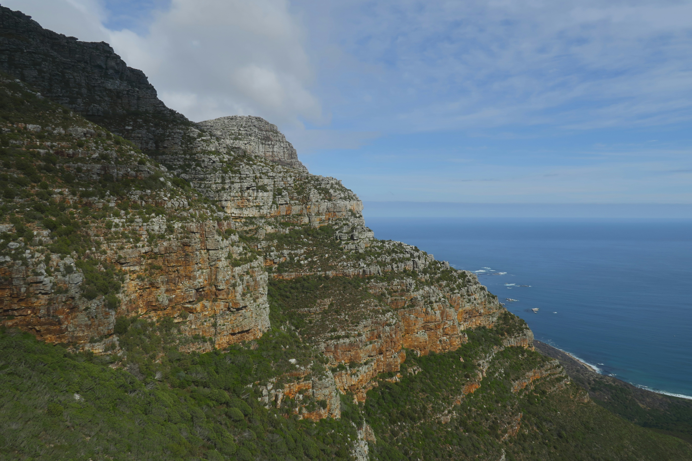

From its colonial past to its modern-day significance, Cape Town has been shaped by diverse cultures and historic events. The city is famous for landmarks such as Robben Island—where Nelson Mandela was imprisoned, the District Six Museum, and the vibrant Bo-Kaap neighborhood.
Photo by Marlin Clark on Unsplash